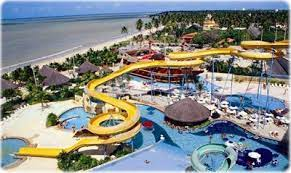
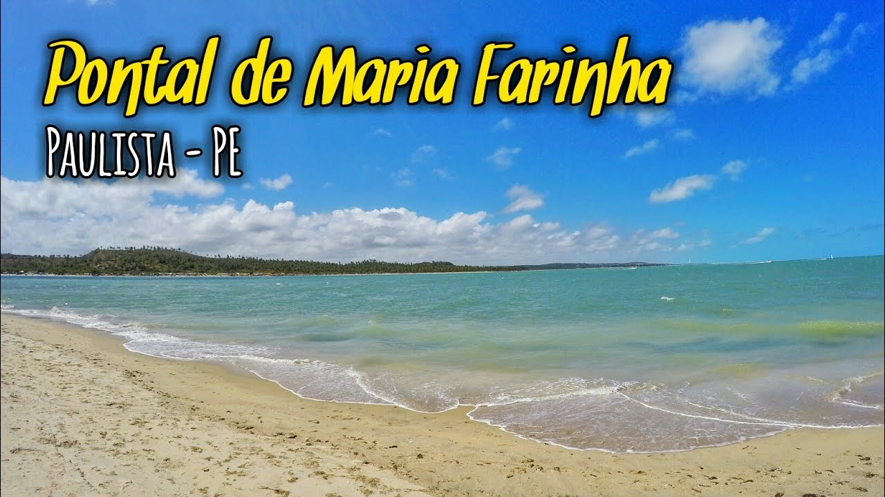
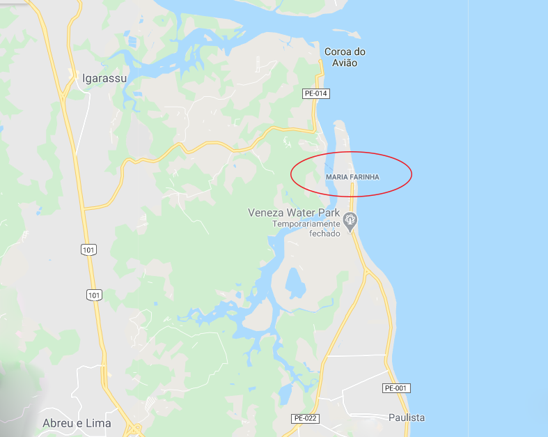
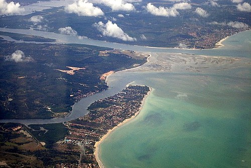
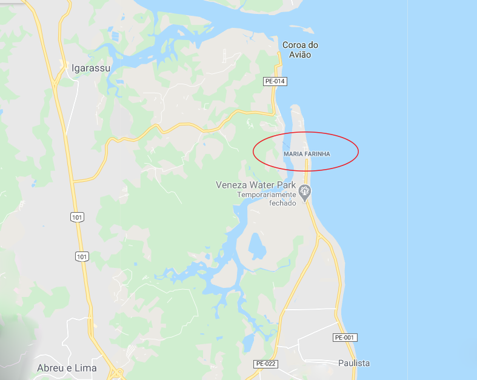
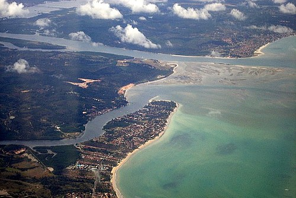
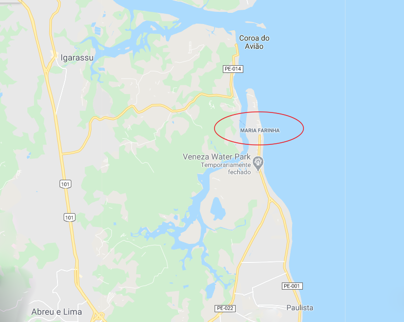
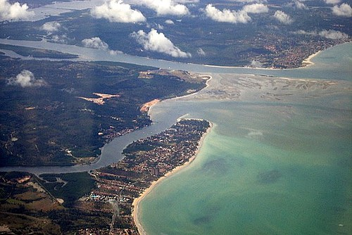

Praia de Maria Farinha - Paulista - Pernambuco
Conheça as maravilhas dessa paraíso!
Situada entre o Rio Timbó e o mar, a praia de areias brancas e fofas se estende por quatro
quilômetros, contornada por coqueirais e muito mangue.
Na maré baixa, passeios de barco levam às caravelas que são pequenos bancos de areia e
cascalho que formam piscinas naturais repleta de peixes coloridos. Outra atração é o Veneza Water Park,
com toboáguas e piscinas que fazem a alegria da criançada. Maria Farinha pertence ao distrito de Paulista.
Além da famosa praia a região reúne outras atrações como as praias do Janga - que fica logo após Olinda - Pau Amarelo,
Nossa Senhora do Ó e Conceição.
Fonte: Trivago:
https://www.trivago.com.br/pt-BR/oar/maria-farinha-praia-hotel-paulista?search=100-10703904
O que encontrar lá?
Lazer e culinária perfeita


 




